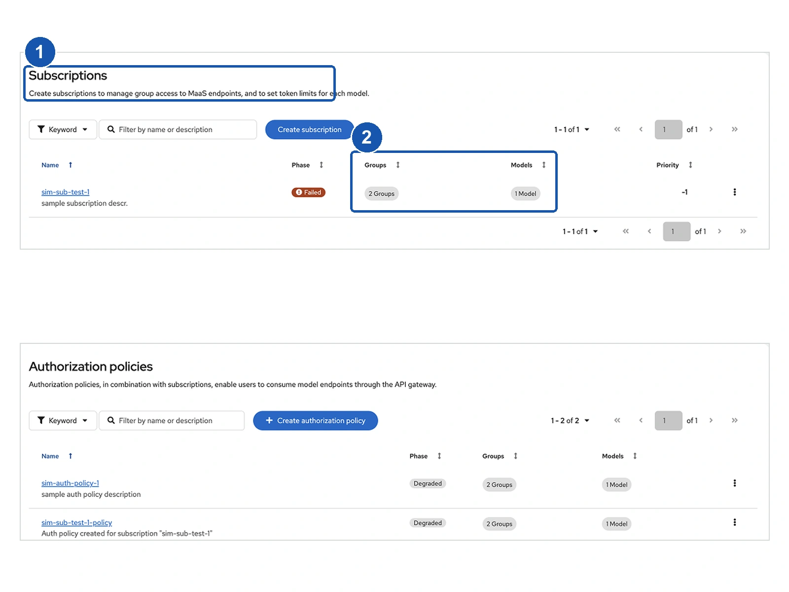
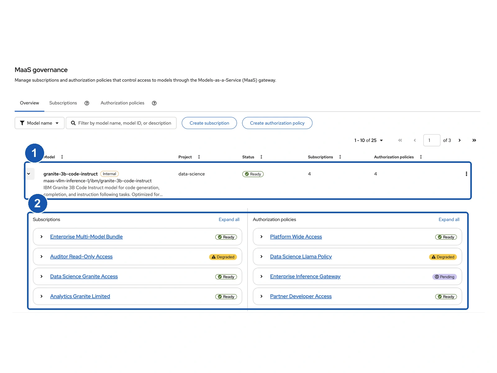
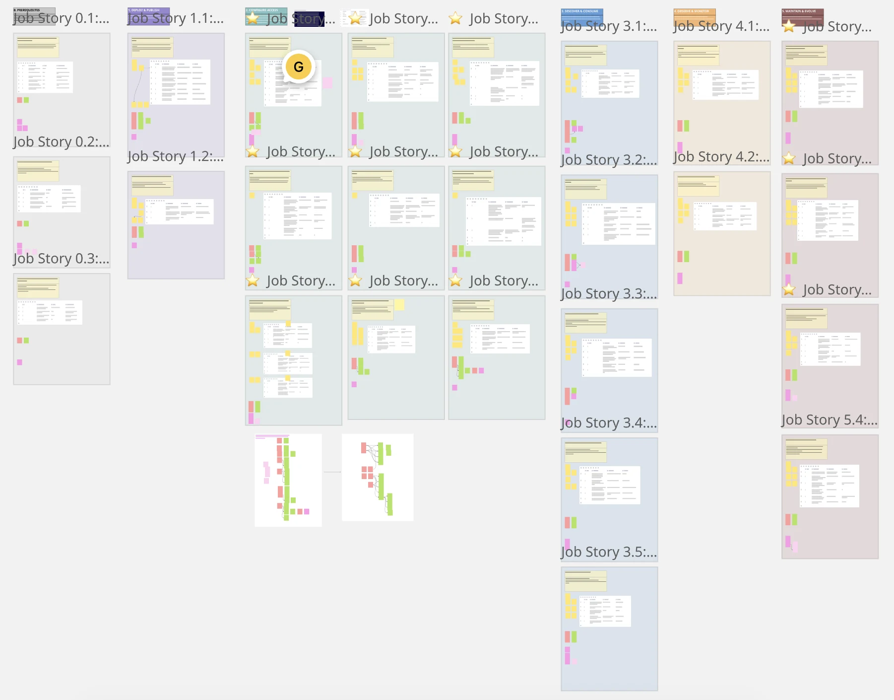
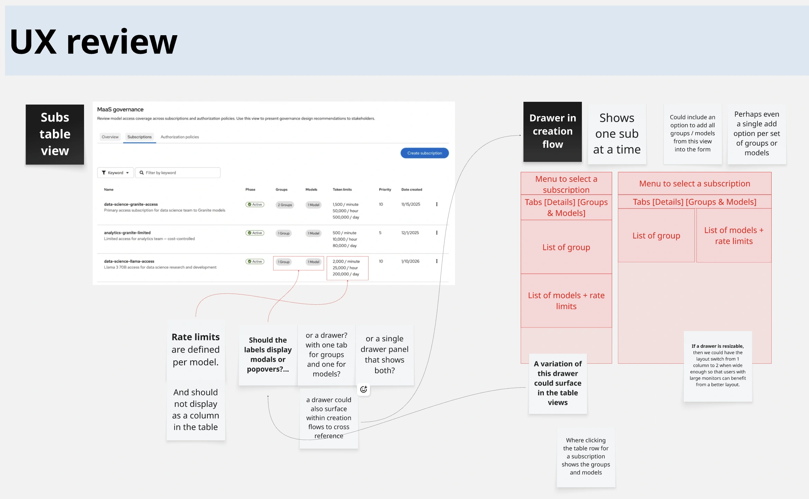
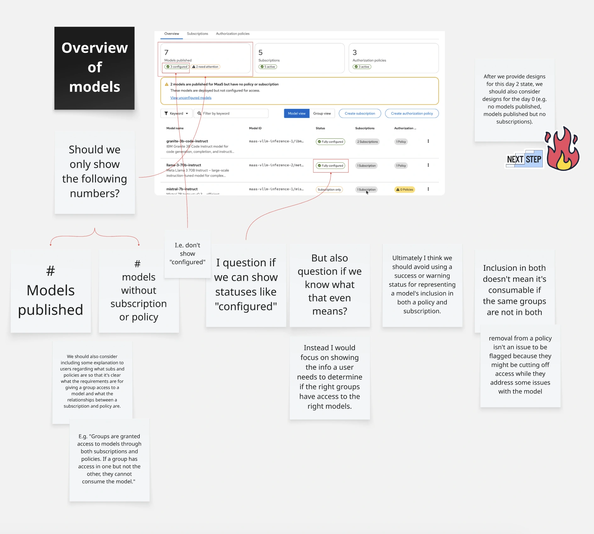
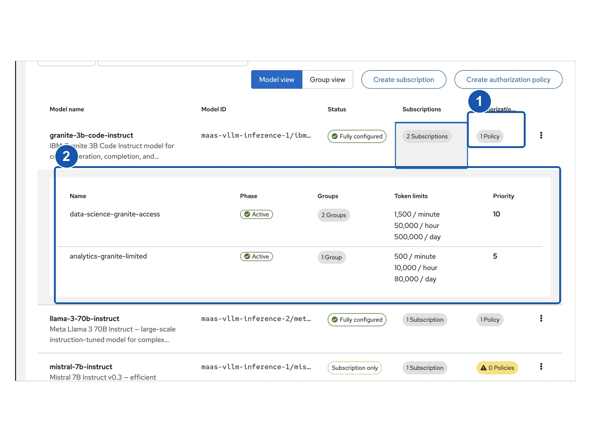
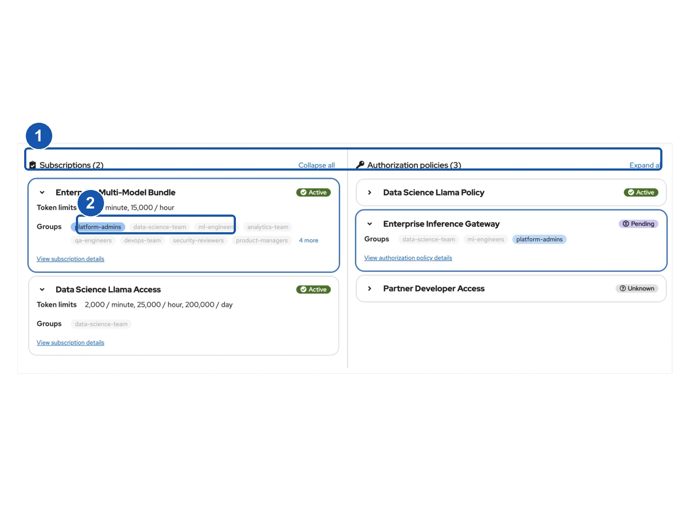
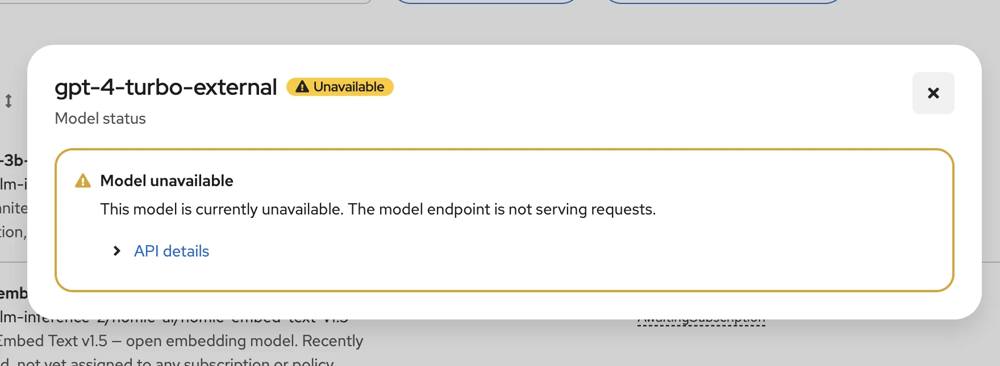

Making AI model access understandable
Red Hat OpenShift AI (RHOAI) is a platform for developing, training, deploying, and managing AI models and applications. I redesigned its model-access settings so administrators could understand who was allowed to use an AI model, what usage limits applied, and where setup was incomplete. The Model view shipped in RHOAI 3.5.
- My role
- Primary UX Designer
- Timeline
- May to August 2026
- Product
- Red Hat OpenShift AIModels-as-a-Service
- Release
- RHOAI 3.5 · Model view shipped
The problem
An administrator could not easily answer why a team could or could not use an AI model. Permissions and usage limits had to be compared across separate pages.
My contribution
As primary designer, I led the workflow workshop, explored and refined the interactions, and worked with product, engineering, UX, and customer-facing specialists through handoff.
What shipped
A shared Overview for investigating a model’s access rules, plus filters and inline details in the supporting settings tables.
Release scope Model view shipped in RHOAI 3.5. Group view was designed and prototyped as follow-on work.
Silent walkthrough · 1:08 The recording opens the Granite model row, expands subscription and policy cards, and selects group labels. Matching labels and cards highlight across both columns. It then repeats the investigation for another model and returns to the model list.
A simple question required a complicated investigation
“My group is out of tokens. Where do I find out?” A customer-facing specialist described the urgency behind this kind of escalation: an administrator needed to find the affected group, understand its allowance, and reach the relevant settings quickly. The existing interface made that investigation difficult.
RHOAI’s Models-as-a-Service (MaaS) capability provides governed access to shared large language models (LLMs). These AI models work with language, for example to generate text. Administrators manage access for user groups, which can represent teams within an organization.
Two settings work together:
- An authorization policy permits specified groups to access model endpoints, the addresses applications send requests to.
- A MaaS subscription gives groups a usage allowance (quota) for specific models. Token rate limits control how much text they can process over time; tokens are small units of text.
Both are required for MaaS access. A subscription alone does not grant permission. The examples below focus on group relationships; actual access also depends on a working model and authentication, which verifies who is making the request.
A team needs permission and a usage allowance
The Analytics team wants to use the Granite AI model.
- PermissionAuthorization policy
- Can Analytics use Granite?
The policy grants this team permission to use the model.
- Usage allowanceMaaS subscription
- How much can Analytics use?
The subscription sets this team’s quota and token rate limits for the model.
Both are required. Permission alone provides no usage allowance; an allowance alone provides no permission.
In the previous experience, policies and subscriptions lived on separate pages with similar-looking tables. Administrators had to open details, remember names, switch pages, and compare them. Even the usage limits that distinguished a subscription were hidden from the list.
The product brief identified this as a barrier to managing shared AI services at scale. The design goal was concrete: let administrators understand access and investigate missing setup without reconstructing the connections from memory.
Before · RHOAI 3.4


Separate pages. Subscriptions and authorization policies had to be checked separately.
Counts, without the names. Group and model counts did not show which settings belonged together.
After · RHOAI 3.5


Start with a model. Expand the model to begin investigating its access settings.
See its settings together. Subscriptions and authorization policies appear in one expanded row.
Turn a broad brief into questions we could design around
The brief already proposed bringing the settings together and adding an Overview. My responsibility was to work out what that Overview needed to show, how people would use it, and what we could deliver for the next release.
I started with our research team’s existing user profiles (personas) and mapped the connected journey: make a model available, configure access, use it, and investigate problems later. I led a workshop with product managers, engineers, and UX colleagues around job stories, short descriptions of what people need to do and why. We reviewed the tasks, challenged gaps, and prioritized opportunities. I organized the board for asynchronous input from people who could not attend.
Job-story workshop


The Miro work was deliberately unfinished: alternative layouts, rough drawers, questions, and critique sat beside the screens. We debated where details should open, whether resource counts were useful, what a “configured” status could honestly mean, and how to handle empty or incomplete setups. Keeping those questions visible gave the team specific decisions to challenge before the design settled.
Exploring table and drawer options


What belongs in the table? What needs a drawer? Rough alternatives made those tradeoffs visible.
Questioning counts and “configured” states


The notes challenge what “configured” means and whether counts can hide a missing group connection.
The discussion needed something more concrete than descriptions of possible layouts. I built interactive prototypes and worked with my team lead to bring them to Field and Customer Adoption specialists, colleagues who regularly help customers use the product.
Customer-facing specialists brought two needs into focus. During an escalation, an administrator needed to locate a group’s allowance and access rules quickly. For teams managing configuration through GitOps, the underlying YAML also needed to be easy to reach. YAML is a text format for configuration; GitOps uses files managed in Git to define and update a system.
The implication was broader than putting information on one page: make it easy to find the affected group, follow its relationships, and inspect the configuration behind them.
Two starting points emerged: “Who can use this model?” and “What can this team use?” I designed Model and Group views around those questions. Later specialist feedback and team consensus helped prioritize the Model view for RHOAI 3.5, with the Group view retained as follow-on work.
Make the connections visible, without showing everything at once
Put permission and usage limits side by side
A table lets administrators scan models. Expanding one row opens the investigation: the model’s subscriptions appear on one side and its authorization policies on the other. Relevant groups and usage limits are visible within that shared space.
I explored a relationship map as an alternative. It made the network of connections visible, but added visual complexity and implementation effort. Reviewing the options with my team lead, I chose to develop the expanded-row layout. It kept the familiar table and revealed detail when someone needed it.
Earlier concept


Policies remain a separate count. The administrator still has to investigate permission elsewhere.
Subscriptions inspected alone. Opening these details reveals only one part of the relationship.
Refined concept


Both settings in context. Permission and usage allowance can be inspected beside each other.
Follow the affected group. Selecting a group highlights matching labels and cards across both columns.
Find the affected group without reading every card
When the starting point was “this group is out of tokens,” an administrator needed to scan for that group across subscriptions and policies. A model could have several of each, with long and overlapping group lists. The relevant settings were easy to lose among the surrounding information.
Selecting a group highlights every related card across both columns and expands the matches. That gives the administrator a visual path from the affected group to its configured token limits and access rules. The surrounding cards remain visible for context. The interaction supports finding the right configuration; it does not report live token consumption.
Show which groups the settings actually cover
Design critique exposed a weakness in the early approach: one subscription plus one policy does not necessarily mean a team has access. They may refer to different groups.
For example, imagine Granite has a subscription for Engineering and a policy for Analytics. Both types of setting exist, but they do not connect either team to the model through both controls. A reassuring count would hide the question the administrator still needed to answer.
This strengthened the reason to show and highlight group names: administrators needed to see whether the affected group appeared in both settings, rather than infer access from the number of resources.
Follow a group across the expanded model row
Select a group label, such as platform-admins, to reveal its matching subscriptions and policies. Select it again to clear the highlight.
- Subscriptions
- 4
- Authorization policies
- 4
Subscriptions
- Token limits
- 2,000 / min · 80,000 / hr · 600,000 / day
Groups
Matching group
- Token limits
- 100 / min · 1,000 / day
Groups
Matching group
- Token limits
- 1,500 / min · 50,000 / hr · 500,000 / day
Groups
Matching group
- Token limits
- 500 / min · 10,000 / hr · 80,000 / day
Groups
Matching group
Authorization policies
Groups
Matching group
Groups
Matching group
Groups
Matching group
Groups
Matching group
Select any group label to find it across both columns.
The interactive excerpt above uses the Granite model and sample groups from my prototype. In the full experience, one subscription or policy can cover several groups and models. I refined the amount of detail, ordering, and expansion behavior so that revealing more information would support the investigation rather than overwhelm it.
The same team must appear in both settings
Different teams
- Permission to use Granite
- Analytics
- Usage allowance for Granite
- Engineering
Analytics is missing a usage allowance. Engineering’s allowance does not cover Analytics.
Same team
- Permission to use Granite
- Analytics
- Usage allowance for Granite
- Analytics
Analytics appears in both. The team has permission and a usage allowance for the same model.
Support configuration workflows and the next step
The request for YAML shaped how I thought about resource details: the visual overview helps people find the relevant subscription or policy, while its configuration supports inspection and GitOps workflows. I kept that need alongside the UI exploration to support administrators who work with configuration files as well as the dashboard.
For the planned Group view, I also added Remove access directly to the table. The intent was to let an administrator act from the place where they were investigating a group’s access. This action belongs to the follow-on Group view design and was not part of the RHOAI 3.5 release.
Keep routine detail checks inside the table
The existing Subscriptions and Authorization policies tables had a different job: inspect a particular setting. Their Groups and Models links opened pop-up dialogs, interrupting comparison with the surrounding rows.
I compared a stacked-card alternative with compound expansion, a PatternFly design-system pattern that opens details beneath the relevant table row. In the review, specialists preferred the cleaner table option; the Overview already provided the richer relationship view.
I used inline expansion and added filters to those supporting tables. The distinction mattered: the Overview explains connections; the other tabs let administrators inspect individual settings.
Silent walkthrough · 0:27 The recording opens Groups within a subscription row, switches to Models to inspect their token limits, and returns to the table. It then uses the filter controls to narrow the list.
Use working prototypes to move the team toward a buildable design
Across the project, I gathered feedback from four Field / Customer Adoption specialists, alongside product managers, engineers, and designers. These were internal expert reviews, not direct customer usability tests. Limited customer access made those specialists valuable, but their approval was not a substitute for measuring usability with customers.
I shared working prototypes so reviewers could expand rows, filter information, and try the highlighting themselves. Short review opportunities became focused conversations about what people could understand and what still needed work.
“I wanted to highlight this as an example of getting feedback really early in a design cycle and being able to incorporate that into the designs that we hand off.”
Use AI to accelerate exploration, with design judgment in the loop
I used Cursor to build and iterate on the prototypes. I also used AI to draft supporting job-story detail, then corrected inaccuracies and added the risks, gaps, and questions myself. These drafts helped prepare the discussion; they were not research findings.
The benefit was being able to put an interaction in front of the team quickly, respond to feedback, and try another version. I remained responsible for the framing, information hierarchy, and choices about what to keep.
Carry the detail through handoff
I reviewed feasibility with frontend and backend engineers during the work, and refined the interface using available PatternFly components. I incorporated the status-detail pattern developed by another designer, keeping this work consistent with the wider product.
After the core design handoff in June, another higher-priority project required my attention. This work continued through copy refinement and analytics planning into August. I partnered with Content Design to resolve labels and helper text, checking technical meaning with engineering where needed.
Status detail


I also defined events for product analytics. Reviewing an AI-assisted draft, I removed fields containing personal information and aligned event names with the interface. I shared that feedback with the research team developing the drafting tool. The handoff included a way to learn from later use, as well as the screens to build.
A shipped experience, with impact still to measure
The Model view shipped in RHOAI 3.5, alongside the unified MaaS governance navigation and improvements to the Subscriptions and Authorization policies tables. Administrators could investigate a model’s permissions and usage limits together, trace relationships, and inspect table details inline.
The Group view was designed and prototyped as follow-on work, including the table-level Remove access action. Broader form and drawer improvements were paused. Keeping those boundaries clear matters: the prototype explored more than the first release delivered.
Customer-facing specialists responded positively to the ability to filter and inspect access relationships. That was useful evidence that the direction addressed their concerns. I do not have reliable post-launch usage metrics, so I cannot claim a measured reduction in troubleshooting time or configuration errors. Disconnected installations and customers who opt out of analytics also limit what usage data can tell us.
The next evaluation should combine available analytics with observed tasks: can an administrator explain a team’s access, find a missing connection, and locate the relevant usage limit? Task success, time, and confidence would help test the intended improvement. These are proposed measurements, not results from this project.
The design moved the work of connecting information from the administrator’s memory into the interface. The principle applies well beyond AI: when an answer depends on several settings, show how those settings relate at the moment someone needs to decide.